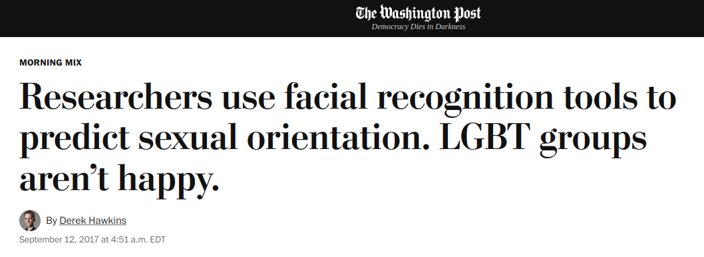
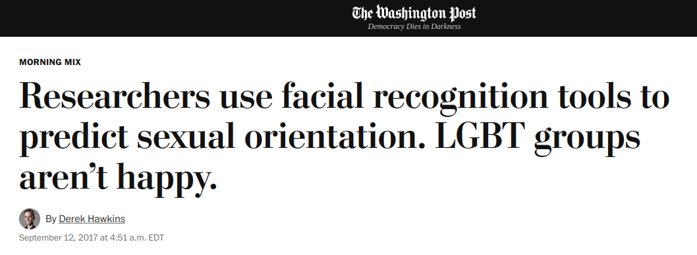
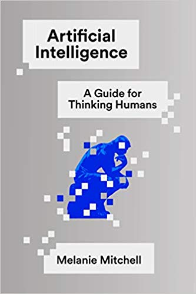
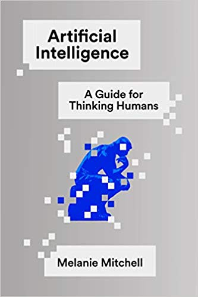
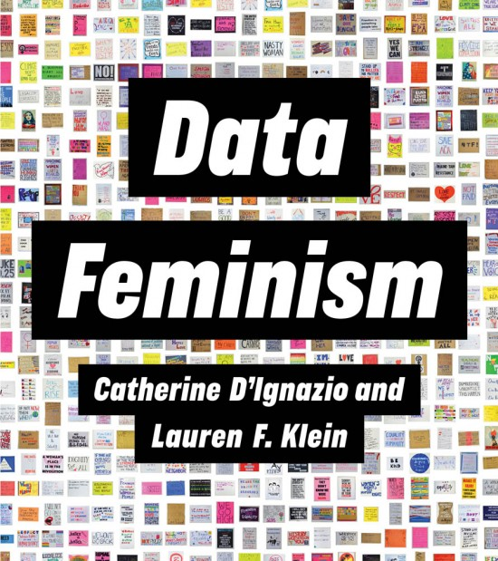
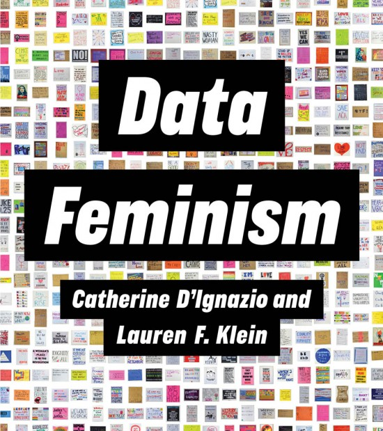

Beauty, Utility, and Consequence
in Mathematics
Jedediyah Williams, PhD
Belmont High School
October, 2023
About Jed


Outline
You can turn and talk or/and add to this Google Doc: https://docs.google.com/document/d/1g1yIbBIhOo3H5e2ujZyJpHFhf2XWYXh7gOJl63z2EH4/edit?usp=sharing

WSJ algorithmic rhyme scheme analysis.
There is tremendous beauty in mathematics, and the sources of beauty are diverse in nature and mode.
Beauty often involves acts of creativity that satisfy constraints.
You can turn and talk or/and add to this Google Doc: https://docs.google.com/document/d/1g1yIbBIhOo3H5e2ujZyJpHFhf2XWYXh7gOJl63z2EH4/edit?usp=sharing
The justification for teaching mathematics is often tied to utility in the solving of real problems.
The justification for teaching mathematics is often tied to utility in the solving of real problems.
I recently asked my students what real-world problems they had worked on in their math classes.
Much of the history of and motivation for mathematics has deep cultural connections.
Tallying, astronomy, calendar, navigation, trade, bookkeeping, surveying, measuring (the Earth), enumeration, physics, statistics, engineering, communication, computability, encryption, analysis, analytics,

.jpg){kind=link}
{kind=link}


You can turn and talk or/and add to this Google Doc: https://docs.google.com/document/d/1g1yIbBIhOo3H5e2ujZyJpHFhf2XWYXh7gOJl63z2EH4/edit?usp=sharing
{kind=link}
{kind=link}

IBM's support of Nazi Germany with compute power for census,
statistics, and logistics calculations.
{kind=link}
Abraham Wald and the Statistical Research Group at Columbia.
You could build an entire course on the mathematics of World War II
- Encryption
- Cryptanalysis
- Computation
- Statistical Research Group
- Ballistics
- Fluid dynamics
- Warcraft engineering
- Manhattan project
- Operation Paperclip


"Essentially, all models are wrong, but some are useful."
- George Box


↓
Some of the more well known harms


 



https://www.nytimes.com/2019/08/16/technology/ai-humans.html


 Anatomy of an AI system, Crawford and Joler
Anatomy of an AI system, Crawford and Joler


- Sun-ha Hong, Prediction as Extraction of Discretion
"Our success, happiness, and wellbeing are never fully of our own making. Others' decisions can profoundly affect the course of our lives...
Arbitrary, inconsistent, or faulty decision-making thus raises serious concerns..."
- Fairness and Machine Learning, Barocas, Hardt, and Narayanan
- Math-based technologies are ubiquitous, often do not work, and are capable of broad and arbitrary harm.
- Are we training the next generation of phrenologists?
- Are we training the next generation of eugenecists?
- To what extent should ethics be incorporated into mathematics classrooms?

|
"Yes, train these young people to get these skills, but integrate into that not only the technical capacity but the critical capacity to question what they're doing and what's happening. To me, it is not true empowerment unless people can have the power to question how these skills are going to be used." |


 


 


Data Modeling Process
Data Modeling Process
Environment
A framework for critical analysis
|
Data
|
• Harmful data collection, lack of consent, insecure / lack of privacy, historical, representational, or measurement bias, ...
|
|
Preprocess
|
• Labor exploitation, labeling by non-experts, incorrect labeling, trauma experienced by labelers, ...
|
|
Explore
|
• Feature selection bias, bias in interpretation of data visualization, data manipulation, feature hacking, ...
|
|
Model
|
• Bias in model choice, model-amplified bias, environmental impact, learning bias, evaluation bias, peripheral modeling, ...
|
|
Communicate
|
• Biased model interpretation, ignoring variance, rejecting model, deploying harmful products, deployment bias, ...
|
|
Meta
|
• "Pernicious feedback loops", runaway homogeneity, susceptability to adversarial attack, lack of oversight or auditing, ...
|
|
|
- Data and all of its questions
- Encryption
- Military
- The pitfalls of our predecesors
- Misuse
- Notation is convention
- See models break
- Bias and variance
- Environment
- Complexity, decidability, the unfinished state of mathematics
- Accountability
- Justice
- ...
- Privacy, security, power, surveillance, consent, access, stereotyping, fairness,...
Resources
- AI Now Institute: https://ainowinstitute.org/
- Lighthouse3, AI Ethics Weekly - https://lighthouse3.com/newsletter/
- The Batch - https://www.deeplearning.ai/the-batch/
- Rachel Thomas Fast.ai Data Ethics Course
- Ethics in Mathematics Readings - Allison N. Miller
- Automating Ambiguity: Challenges and Pitfalls of Artificial Intelligence - Abeba Birhane
- On the dangers of stochastic parrots: Can language models be too big? - Emily M. Bender, Timnit Gebru, Angelina McMillan-Major, and Margaret Mitchell
- Rachael Tatman - YouTube
- SaTML 2023 - Timnit Gebru - Eugenics and the Promise of Utopia through AGI
- A.I. and Stochastic Parrots | FACTUALLY with Emily Bender and Timnit Gebru
- AIES '22: Proceedings of the 2022 AAAI/ACM Conference on AI, Ethics, and Society https://dl.acm.org/doi/proceedings/10.1145/3514094
- Teaching Machine Learning in the Context of Critical Quantitative Information Literacy
- Integrating data science ethics into an undergraduate major: A case study
- A call for a humanistic stance toward k-12 data science education
- Artificial intelligence in education: Addressing ethical challenges in K-12 settings
- Provisional Data Science for Social Change Spring 2022 schedule